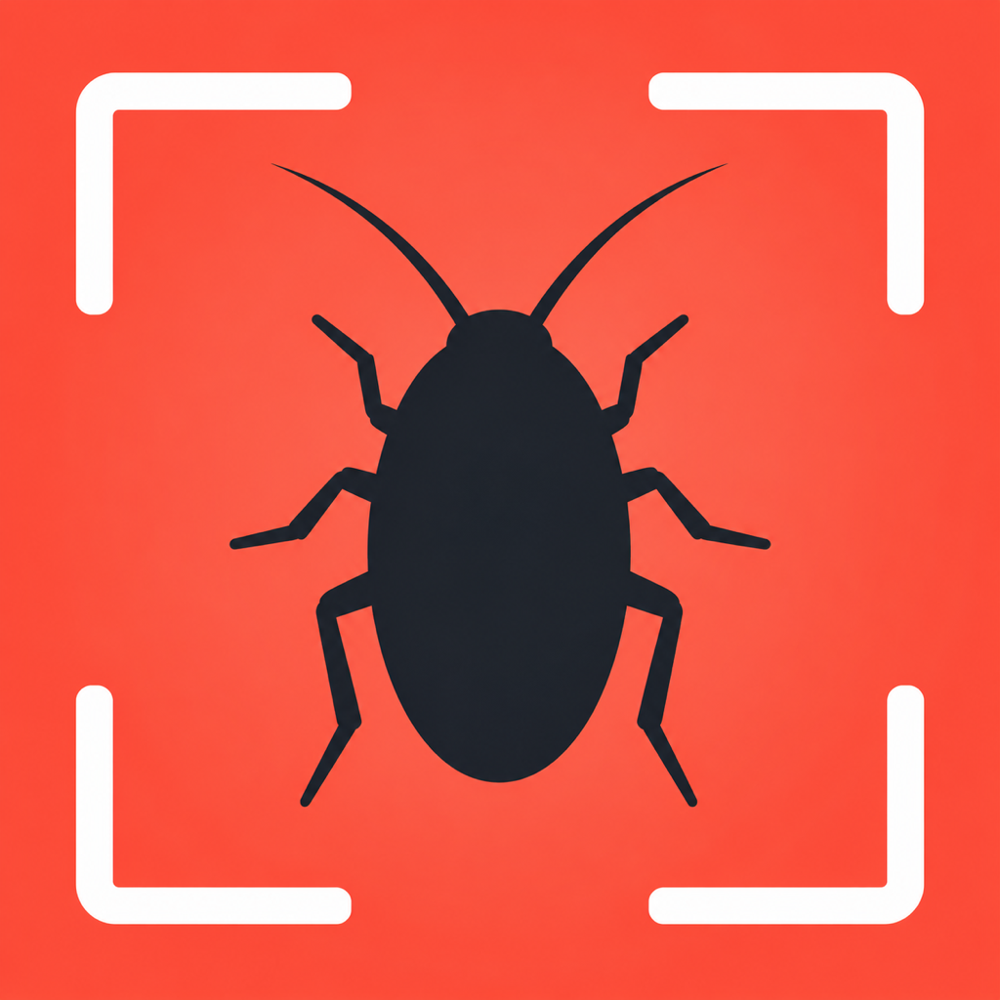
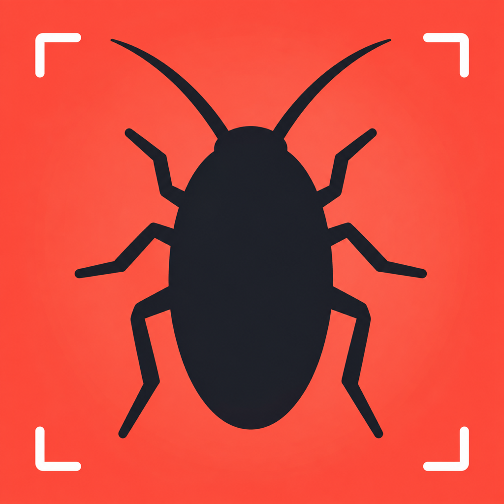
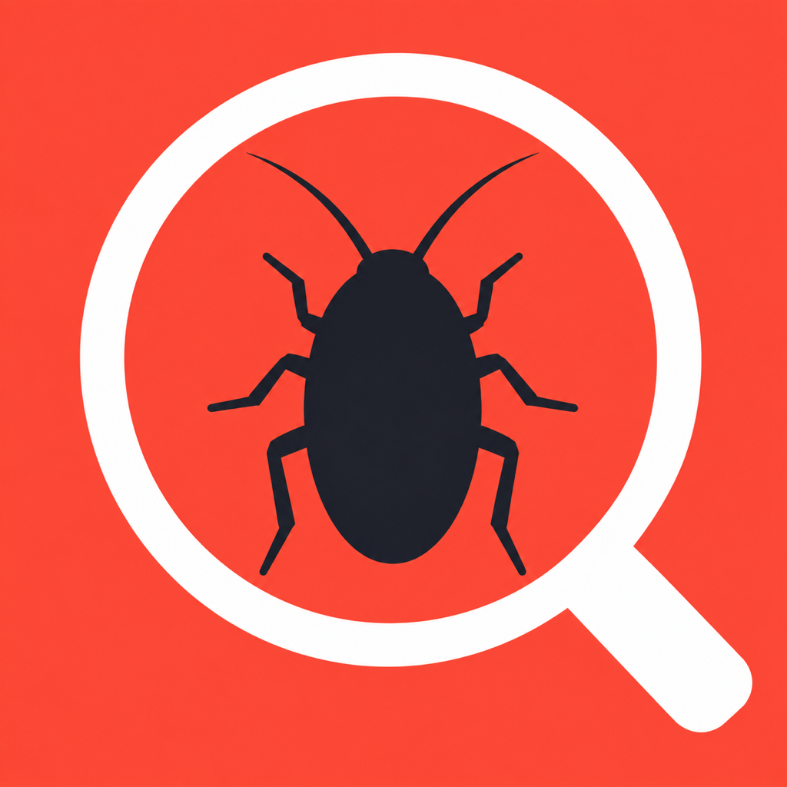
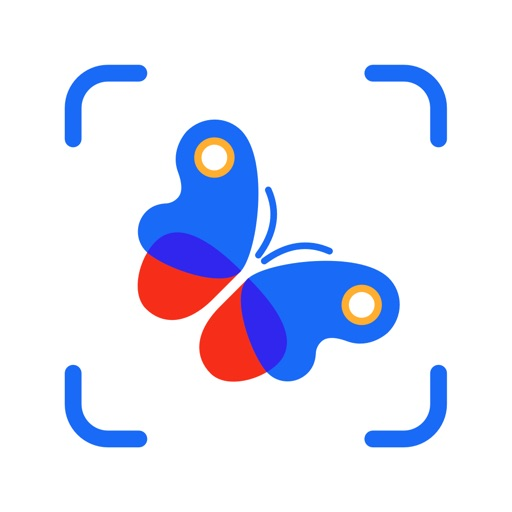
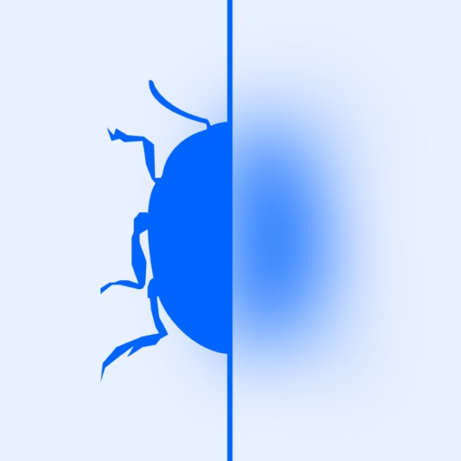
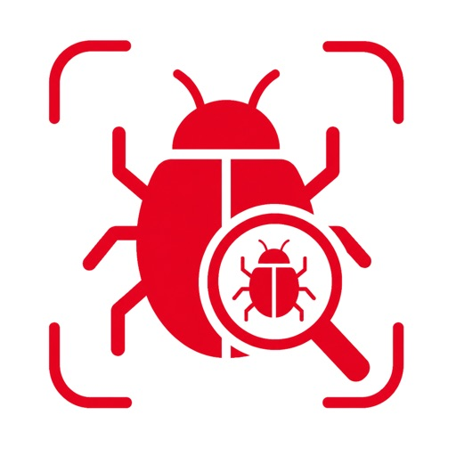
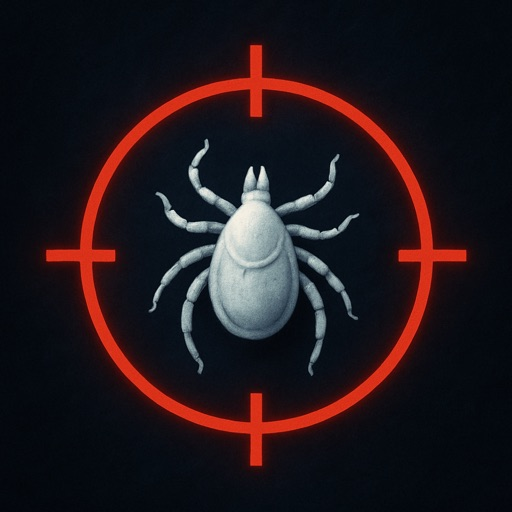
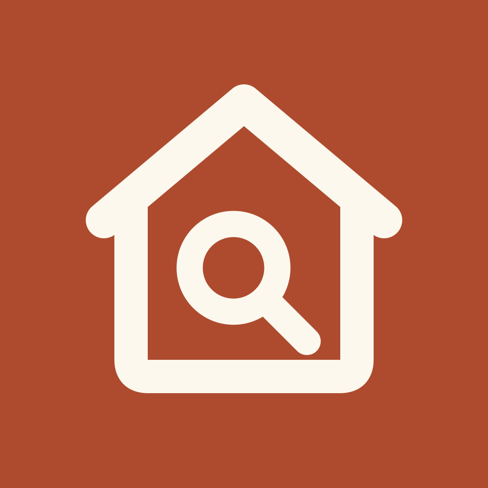
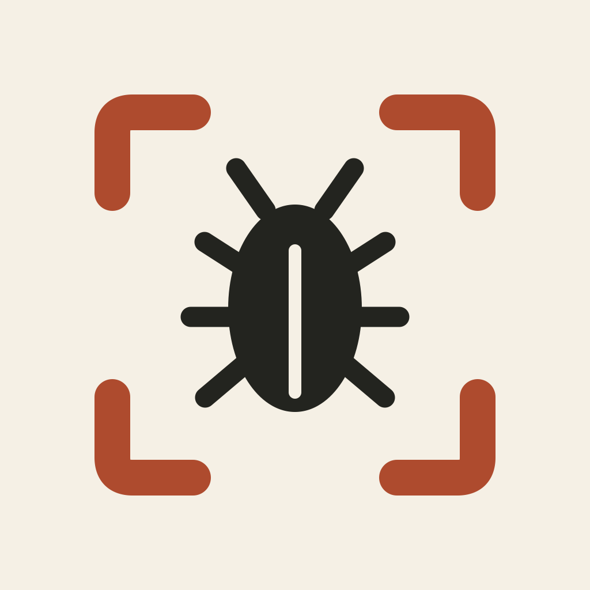
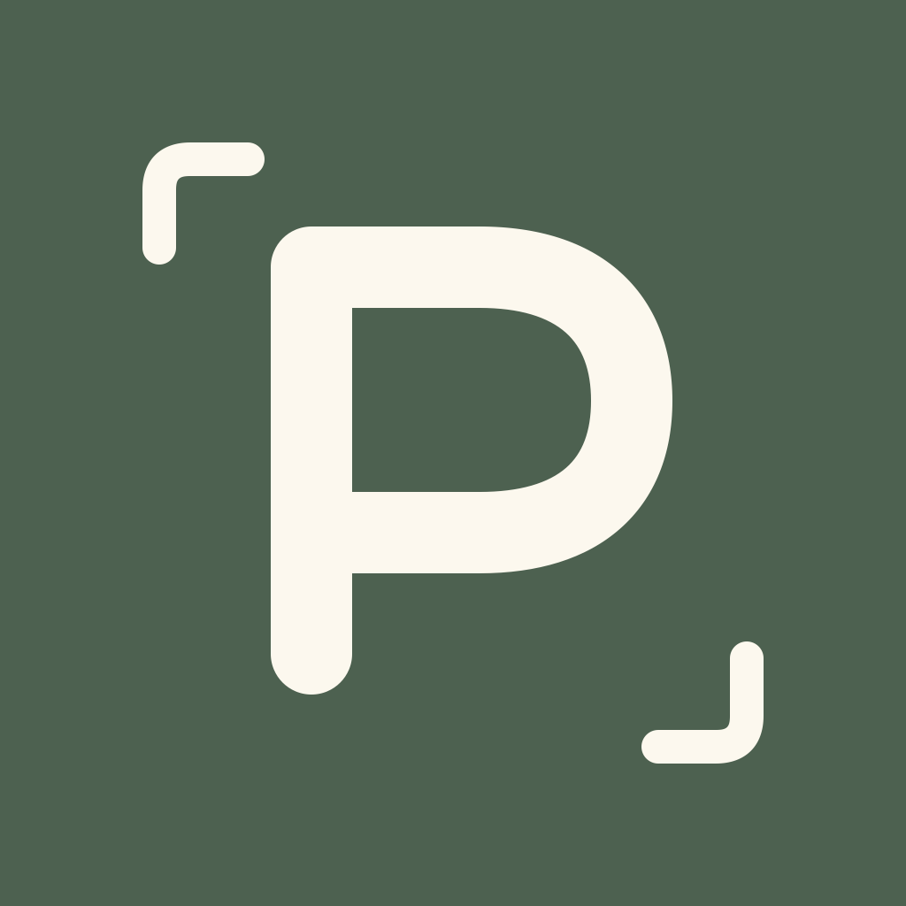

R2A


604029
Чище оригинал
Крупный вредитель, четыре более тонких угла кадра. Ближе всего к текущей иконке.
Мой визуальный фаворит для дальнейшей проверки. Сохраняет идею и узнаваемость; улучшение конверсии ещё не измерено.
Раунд 2 — усиливаем текущий знак.
Сохраняем крупного вредителя, коралловый фон и понятную проверку. Первый раунд с домом и буквой не принят: оригинал оказался выразительнее. Он остаётся контрольным вариантом.
Самое аккуратное развитие оригинала: рамка тоньше, жук крупнее, знакомый контраст сохранён. R2B проверяет более крупный силуэт; R2C — лупу вместо кадра. Ни одному варианту пока не приписываем рост установок.

Крупный вредитель, четыре более тонких угла кадра. Ближе всего к текущей иконке.
Мой визуальный фаворит для дальнейшей проверки. Сохраняет идею и узнаваемость; улучшение конверсии ещё не измерено.

Жук занимает больше поля, углы сканера стали короткими. Силуэт заметнее в маленьком размере.
Выразительный силуэт, но короткие углы слабее объясняют сканирование.

Исходный вредитель внутри белой лупы. Коралловый фон и тёмный силуэт сохранены.
Лупа ясно обозначает проверку, но круг занимает много поля и уменьшает вредителя.
Исходник, который уже приносил скачивания. Контрольный вариант для сравнения.
Сильный контраст и понятная категория. Новым вариантам ещё предстоит доказать преимущество.




Иконки соседей получены из US App Store 30.09.2026. Порядок условный; это сравнение формы и цвета, а не реальные позиции поиска.
Крупные изображения и 60/40/29 px просмотрены визуально. У R2A сохраняется рамка; у R2B первым читается вредитель, маленькие углы менее заметны; у R2C ясно читается лупа, но насекомое выглядит меньше. Три иконки сгенерированы редактированием оригинала через imagegen, исходные генерации сохранены отдельно от экспортов 1024×1024.
Jev принимает только текст и не видит сами картинки. Ниже — новый прогон по нейтральным описаниям знаков. Он проверяет смысл «вредитель + проверка», но не оценивает качество рисунка или читаемость в пикселях.
24 синтетические персоны, 96 успешных запросов, четыре порядка вариантов. Каждый знак занимал каждую позицию один раз. Название и подзаголовок одинаковы; три generic-персоны исключены из целевой сводки. Вопрос — какой листинг человек был бы склонен открыть первым по описанному знаку.
| Знак | Целевые когорты | Домовладельцы | Арендаторы | Родители | Питомцы |
|---|---|---|---|---|---|
| R2C · лупа | 0.66 | 0.65 | 0.63 | 0.70 | 0.65 |
| R2A · чище оригинал | 0.07 | 0.07 | 0.09 | 0.07 | 0.05 |
| D · текущая | 0.05 | 0.05 | 0.08 | 0.05 | 0.03 |
| R2B · крупнее вредитель | 0.02 | 0.02 | 0.02 | 0.02 | 0.01 |
По смыслу лидирует R2C — вредитель под лупой. Он первый во всех четырёх порядках и во всех целевых когортах. Лупа яснее сообщает «проверить находку», чем разница в толщине рамки, которую текстовая модель не видит. Это аргумент проверить C визуально рядом с оригиналом, а не доказательство роста скачиваний.
Числа — средние доли модельного распределения выбора. Это не CTR и не доля реальных установок. Вариант «не открывать ни один» получил 0.20. Разброс R2C по порядкам — 0.41–0.79. Этот раунд нельзя напрямую сравнивать с долями первого: состав альтернатив изменился.
Моя визуальная оценка: A ближе к оригиналу и сохраняет рамку; C даёт самое ясное отличие по смыслу проверки; у B углы слишком малы. Следующее сравнение — A, C и текущая иконка рядом с одинаковыми названием и первым скриншотом.
Агрегированные результаты по когортам и порядкам
Для реального сравнения конверсии нужны показы, открытия карточки и установки при одинаковых метаданных и скриншотах. Текущая иконка остаётся в приложении до выбора варианта.
Архив 30.09.2026. Рекомендации ниже отражают первый раунд и не являются текущим выбором. Владелец предпочёл исходную иконку.
Узнать, что происходит дома. Понять, что делать дальше.
Домовладелец проверяет вредителя или следы. Арендатор собирает доказательства. Родитель наблюдает за следом укуса. Владелец питомца проверяет клеща и возвращается к наблюдению. Натуралисты и коллекционеры видов — за пределами нашего основного фокуса.
Мой первоначальный фаворит A не получил поддержки в проверке смысла знака. B — самый сильный новый кандидат. Текущая D остаётся сильной у домовладельцев и арендаторов; оснований считать её проигравшей пока нет.

Проверить ситуацию дома и понять следующий шаг.
Почему рассмотреть. Лучше передаёт наш угол атаки: дом, следы, укусы, питомцы — одна бытовая ситуация.
Компромисс. Без названия может напомнить осмотр недвижимости. Категорию уточняют название Pest Control App и подзаголовок Bug Bite Identifier & Scanner.

Самый прямой вход из поиска по bug / pest identifier.
Почему рассмотреть. Ясная категория. Льняной фон и терракотовая рамка соединяют иконку с новой витриной.
Компромисс. Ближе к шаблону категории. Жук хуже представляет укусы, следы и наблюдение за питомцем.

Фирменная буква и два угла кадра на шалфейном фоне.
Почему рассмотреть. Не показывает неприятный объект на домашнем экране. Подходит для развития бренда.
Компромисс. Самая слабая подсказка о категории для человека, который ещё не знает PestSnap.
Иконки соседей получены из US App Store 30.09.2026. Порядок условный: это проверка цвета и формы рядом с соседями, а не фактические позиции поиска. Название и подзаголовок — из файлов текущих метаданных проекта; live-версия листинга PestSnap не сверялась.
| Когорта | Что ей нужно | Следствие для иконки |
|---|---|---|
| Домовладельцы · primary | Что за вредитель, где проверить следы, что делать сегодня. | A передаёт домашнюю проверку; B яснее показывает идентификацию вредителя. |
| Арендаторы | Проверка комнаты, фото и запись для арендодателя. | A и C не выставляют проблему с насекомыми напоказ на домашнем экране. |
| Родители | Понятное наблюдение за следом укуса и следующий шаг. | Спокойная подача; жук не должен быть единственным обещанием продукта. |
| Владельцы питомцев | Проверка клеща и наблюдение за собакой или кошкой. | B узнаваем как поиск вредителя, но ни один вариант не должен обещать только энтомологию. |
Текущая иконка.
Крупный жук на ярком коралле с белыми углами кадра. Соответствует апрельской системе; сентябрьская «Linen & Verdict» использует лён, терракоту и шалфей.
Знаки просмотрены крупно и в 60/40/29 px. A сохраняет дом и лупу; B сохраняет рамку и силуэт, но детали лап становятся второстепенными; C сохраняет букву и углы. Все три направления используют цвета утверждённой системы.
Размеры проверены визуально автором эскизов. Jev не видит картинки и не проверяет читаемость в пикселях: ему переданы нейтральные описания формы и цвета. Следующий шаг — визуальное сравнение B и текущей D при одинаковых названии, подзаголовке и первом скриншоте.
24 синтетические персоны · 96 успешных запросов · 4 порядка вариантов. Каждый знак по одному разу поставлен в каждую позицию. В основной сводке 21 персона из четырёх целевых когорт; три generic-персоны показаны отдельно в сводке. Заголовок и подзаголовок одинаковы для всех вариантов и взяты из текущих файлов метаданных проекта.
Таблица показывает среднюю модельную вероятность выбора описанной иконки для первого открытия листинга. Это доли распределения Jev, не CTR, не прогноз установок и не результаты опроса людей.
| Знак | Целевые когорты | Домовладельцы | Арендаторы | Родители | Питомцы |
|---|---|---|---|---|---|
| D · текущая иконка | 0.41 | 0.43 | 0.49 | 0.36 | 0.33 |
| B · вредитель в фокусе | 0.37 | 0.32 | 0.25 | 0.52 | 0.48 |
| A · дом под лупой | 0.14 | 0.16 | 0.20 | 0.06 | 0.08 |
| C · фирменная P | 0.03 | 0.03 | 0.04 | 0.03 | 0.03 |
Чего результат не доказывает. B выигрывает у D в двух порядках, D — в двух других. Средние 0.37 и 0.41 не дают устойчивого победителя. B сильнее среди родителей и владельцев питомцев; D — среди домовладельцев и арендаторов. A и C значительно слабее по сигналу категории.
В отдельной оценке по шкале 0–4 B получил 0.81 по дискомфорту, текущая D — 1.79; меньше означает спокойнее. Это поддерживает направление B для менее тревожной подачи, но не доказывает рост конверсии.
Решение для следующего раунда: сохранить понятный силуэт вредителя и связь со сканированием. Развивать B, а текущую иконку оставить контролем. Малое число установок само по себе не доказывает проблему иконки: нужна связка показы → просмотры страницы → установки за одинаковые периоды.
Ограничение Jev: принимает только текст. Полная агрегированная сводка по когортам и порядкам.